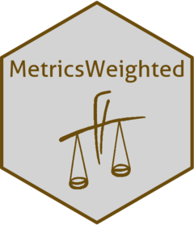

MetricsWeighted 
Overview
{MetricsWeighted} provides weighted and unweighted versions of metrics, scoring functions and performance measures for machine learning.
Installation
# From CRAN
install.packages("MetricsWeighted")
# Development version
devtools::install_github("mayer79/MetricsWeighted")Usage
There are two ways to apply the package. We will go through them in the following examples. Please have a look at the vignette on CRAN for further information and examples.
Example 2: data.frame interface
Useful e.g. in a {dplyr} chain.
dat <- data.frame(y = y, pred = pred)
performance(dat, actual = "y", predicted = "pred")
> metric value
> rmse 1.581139
performance(
dat,
actual = "y",
predicted = "pred",
metrics = list(rmse = rmse, `R-squared` = r_squared)
)
> metric value
> rmse 1.5811388
> R-squared 0.6969697Check out the vignette for more applications.